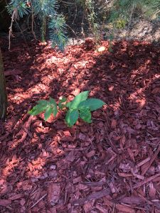

Home, WA
When I was working in the yard, I found that the little squirrel planted another walnut tree. We have four walnut trees in our house. At first, I didn’t know what they are, so I didn’t do anything to them. As a result, three of them have already grown up and we could not move them anymore. Currently, I have to prune these three trees massively every year and treat these big trees as vine.😳
Fortunately, when the last one grew up, I knew what it is so we moved it to a proper place so it could grow up properly.
Now there is another one. We ran out of space so we can’t take it anymore. At the moment, it is still small so we could easily move it. Anyone interested?

×